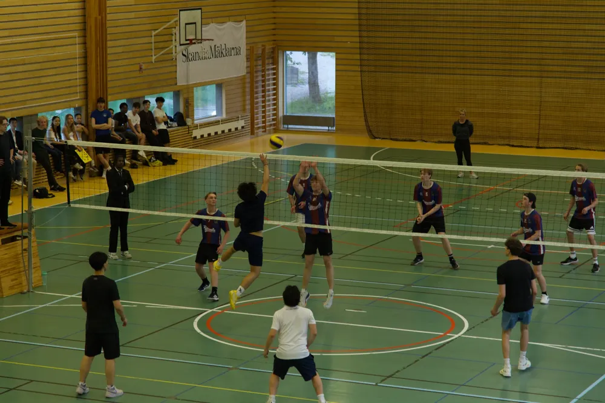

Östra gymnasiet

Volleybollturneringens brist på regler: "En stor fara"
På måndagen som den här tidningen trycks kommer Östras (ö)kända volleybollturnering 2026 gå av stapeln. Turneringen, som är hyllad av många elever, är en manifestation av Östra-andan som Stefan brukade prata om. Men alla är inte lika glada – bristen på regler har lett till särskilt stark kritik från kommunen och Svenska volleybollförbundet, trots att det inte är en officiell tävling.
Turneringen är känd för att helt sakna regler och moral, och med frivilliga domare från klasserna är systemet som finns att det inte finns något system. Det fulspelas ofta från båda sidor eftersom domaren aldrig rycker in. Förra året blev det så illa att en spelare från en av samtreornas lag drog fram en högtryckstvätt och spolade bort alla motspelare. Straffet för sammaren? Ett varningens finger och en arg blick från domaren, som sedan avslutade matchen 83-0.
Kommunen vill sätta stopp för turneringen på grund av att "den utsätter deltagande elever för stor fara". Under en pressträff förklarade kommunens idrottsråd Lina Ludis att "evenemangen genast måste upphöra. Fortsätter det så här kommer vi till 2029 ha öppen eldstrid på plan." Kommunen har tagit kontakt med Svenska volleybollförbundet, som säger att de inte kan göra något eftersom Östras volleybollturnering inte är en officiell tävling. De tillade däremot att de "helt och hållet håller med kommunen i frågan".
Trots kommunens ord kommer Östras volleybollturnering hållas i år igen, måndag klockan ett i idrottshallen. Vi får väl se vad skolans alla lag tänker hitta på den här gången…